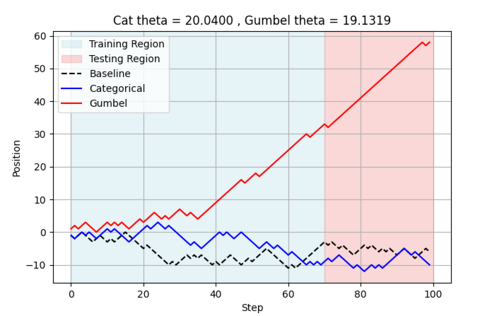
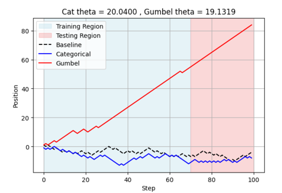
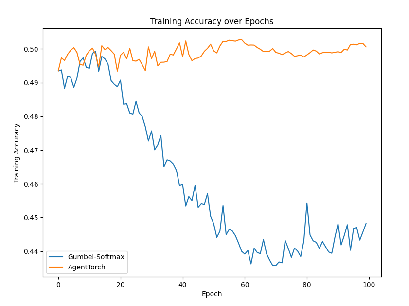
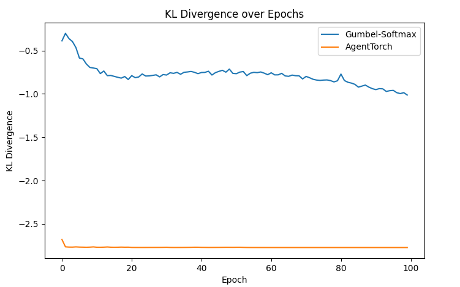

Differentiable Discrete Sampling using AgentTorch
Introduction
Discrete sampling poses significant challenges in gradient-based optimization due to its non-differentiable nature, which prevents effective backpropagation. Operations like argmax disrupt gradient flow, leading to high-variance or biased gradient estimates. The Gumbel-Softmax technique addresses this by using a reparameterization trick that adds Gumbel noise to logits and applies a temperature-controlled softmax, enabling differentiable approximations of discrete samples. As the temperature approaches zero, the method produces near-discrete outputs while maintaining gradient flow, making it suitable for integrating discrete sampling into neural networks.
Rethinking Discrete Sampling
It was assumed that Gumbel softmax solves this problem. However, Gumbel-Softmax has its own limitations. The temperature parameter introduces a bias-variance tradeoff: higher temperatures smooth gradients but deviate from true categorical distributions, while lower temperatures yield near-discrete samples with unstable gradients. Additionally, its continuous approximations may require straight-through estimators, which can introduce bias during backpropagation. These issues make Gumbel-Softmax less effective in tasks requiring precise distribution matching or structured outputs, highlighting the need for further improvements in discrete sampling techniques.
So we introduce a new method for discrete sampling using the agent_torch.core.distribution.Categorical class. This class provides a differentiable approximation to discrete sampling, allowing for gradient-based optimization while maintaining the integrity of the categorical distribution.
This estimator can simply be used as follows:
import torch
from agent_torch.core.distributions import Categorical
# Define the probabilities for each category
probs = torch.tensor([0.2, 0.5, 0.3], dtype=torch.float32)
# Create a Categorical distribution
sample = Categorical.apply(probs)
# The sample will be a tensor containing the sampled category
print(sample)
Let's discuss more about this by seeing its application in various experiments.
Experiment 1: Random Walk
Let's implement a 1D markovian random walk X0, X1, ...., Xn using the agent_torch.core.distribution.Categorical sampling method. The agent can move left or right with probabilites:
- Xn+1 = Xn + 1 with probability e^(-Xn/p)
- Xn+1 = Xn - 1 with probability 1 - e^(-Xn/p)
First, lets import the important modules:
import torch
import math
from agent_torch.core.distributions import Categorical
We are interested in studying the asymptotic behavior of the variance of our automatically derived gradient estimator, and so set p = n so that the transition function varies appreciably over the range of the walk for all n.
Let's define the main function:
def random_walk_categorical(n, p, device):
x = 0.0 # initial state
path = [0.0]
for _ in range(n):
# Compute the probability of moving up.
q = math.exp(-x / p)
prob = torch.tensor([q, 1.0 - q], dtype=torch.float32, device=device).unsqueeze(0)
# Sample an action using the custom Categorical function.
sample = Categorical.apply(prob)
move = 1 if sample.item() == 0 else -1
# if at x==0, a downward move is overridden, since probability for going up is 1.
if x == 0 and move == -1:
move = 1
x += move
path.append(x)
return path
This random walk can be generated by:
n = 20 # A 20 step simulation
p = n
device = torch.device("cuda" if torch.cuda.is_available() else "cpu")
random_path = random_walk_categorical(n,p,device)
# This random walk looks like [0,1,2,1,...]
Having seen how a random walk is implemented using AgentTorch, let's benchmark this against the Gumbel softmax method. The Gumbel softmax method is a differentiable approximation to the categorical distribution, allowing for gradient-based optimization. Let's discuss the experiment setup.
Experiment Setup
This experiment focuses on the optimization of a parameter θ (theta) embedded within an exponential probability distribution function exp(-(x + θ)/p), which governs the stochastic transition dynamics of our model. The primary objective is to calibrate θ such that the model's behavior closely approximates a baseline implementation, as measured by mean squared error (MSE).
The methodology involves generating a substantial dataset comprising 1,000 trajectories, each consisting of 100 discrete time steps. This dataset is partitioned following standard machine learning protocols, with 70% allocated for parameter estimation (training) and 30% reserved for out-of-sample validation (testing).
By systematically adjusting θ, we aim to modulate the underlying probability distribution, thereby altering the likelihood of specific state transitions. This parameter optimization process seeks to minimize the discrepancy between the simulated trajectories and those produced by the baseline model. The efficacy of each candidate value for θ is quantitatively assessed via the MSE metric, which provides a rigorous measure of the deviation between the predicted and reference trajectories.
This approach enables the fine-tuning of stochastic models to replicate observed phenomena with enhanced precision, with potential applications in various domains including statistical physics, financial modeling, and computational biology.
Results
The empirical findings demonstrate that the agent_torch.core.distribution.Categorical approach consistently exhibits superior performance metrics compared to the Gumbel-based method. Specifically, the agent_torch.core.distribution.Categorical method maintains consistently lower Wasserstein distance values across all experimental configurations, indicating better alignment between simulated and baseline distributions. Furthermore, the agent_torch.core.distribution.Categorical approach effectively preserves the variance ratio at approximately unity, which substantiates that the generated trajectories maintain distributional characteristics highly comparable to those of the baseline.
Although the parameter convergence behavior varies across different initialization points, particularly for initial values of 10.0 and 0.0, the distributional properties of the Categorical method's outputs remain demonstrably superior to those produced by the Gumbel approach. This superiority is quantitatively verified through both lower Wasserstein distance measurements and reduced mean squared error metrics, which collectively indicate that the agent_torch.core.distribution.Categorical method generates distributions with greater fidelity to the baseline distribution regardless of initialization conditions. These results suggest that the agent_torch.core.distribution.Categorical approach provides a more robust framework for distribution matching in this experimental context, maintaining consistent performance advantages across varied experimental configurations.
These results will further become clear when we plot these random walks. It can clearly be infered that the Gumbel method starts diverging from the baseline and performs poorly on the test dataset.
 
First, we run the experiment for 100 time-steps and calibrate theta values for both methods. Among the methods, agent_torch.core.distribution.Categorical stays relatively close to the baseline, while the Gumbel-based approach begins to drift early and deviates substantially in the testing region. This suggests that the Categorical method generalizes better across regions and is more stable under extended evaluation.
Second, we extend the experiment to 1000 steps to examine long-term behavior. Over this longer horizon, the difference becomes even more pronounced. Gumbel's trajectory continues to diverge and accumulates a large positional error, confirming its poor generalization performance. In contrast, agent_torch.core.distribution.Categorical remains much more aligned with the baseline throughout.
Experiment 2: Neural Relational Inference
The neural relational inference experiment is designed to infer and model latent interactions among entities in a dynamic system. In this experiment, a graph-based neural architecture is employed in which a factor graph CNN encoder extracts relational features from observed data, while a learned recurrent interaction net decoder predicts future states by modeling interactions between nodes (or atoms). The goal is to simultaneously learn the underlying relations and use these learned interactions to improve prediction accuracy and interpretability of the system’s dynamics.
Experiment Setup
The NRI experiment specifically focuses on learning to infer interactions in physical systems without supervision. The model is structured as a variational auto-encoder where the latent code represents the underlying interaction graph and the reconstruction is based on graph neural networks. The researchers conducted experiments on simulated physical systems including springs and charged particles. The model is evaluated on its ability to recover ground-truth interactions in these simulated environments, as well as its capacity to find interpretable structure and predict complex dynamics in real-world data such as motion capture and sports tracking data
Initially, the experiment employed a Gumbel-Softmax approach for discrete sampling. In this setup, the addition of Gumbel noise and a temperature-controlled softmax allowed for differentiable approximations of categorical samples. However, the inherent bias-variance tradeoff—where higher temperatures yield smoother but less discrete gradients, and lower temperatures produce near-discrete but unstable gradients—limits the method's effectiveness. While the negative log-likelihood decreases over epochs, the KL divergence remains relatively low, suggesting insufficient regularization of the discrete structure .
Recognizing these limitations, the experiment was repeated using our agent_torch.core.distribution.Categorical class. This new estimator directly provides a differentiable approximation for discrete sampling, bypassing some of the drawbacks inherent in the Gumbel-Softmax method. Notably, by more tightly coupling the sampling process to the categorical distribution, the estimator mitigates the bias-variance issue and improves gradient stability during training.
Results
 
The training logs for the categorical estimator experiment reveal several improvements:
- Stable KL Divergence: The KL divergence values remained consistent from early epochs into convergence. This higher and stable KL value suggests that the model is enforcing a stronger regularization on the inferred discrete relations, leading to a more consistent latent structure.
- Lower Negative Log-Likelihood: While both methods converge to low nll_train values as training proceeds, the categorical estimator maintains comparably low loss values alongside improved training accuracy.
- Improved Predictive Accuracy: The accuracy trends in the logs show that the categorical estimator experiment reaches and sustains higher accuracy levels. The results point to a model that not only fits the data better but also generalizes more effectively—an essential trait when dealing with structured, relational data.
Conclusion
This tutorial demonstrated how to implement and use differentiable discrete sampling operations using AgentTorch.